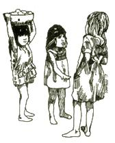
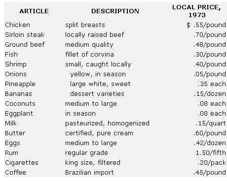
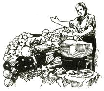

If you're still looking for a place to spend that "retired" six months of the year-or if you'd like to live on a modest independent income instead of taking a job to supplement it-here's an answer that works for thousands of bargain-conscious expatriates: Try life in a friendly, slow-paced Latin American village.
When Dick (my husband) returned from the U.S. with a small grant to write a book, we found that life on our Costa Rican mountain farm didn't allow him easy enough access to the excellent research facilities of the country's capital, San Jose. We thought awhile, and came up with the perfect solution for Dick's problem and our family's comfort: We rented a lovely little home in the village of Villa Colon, near the city, and settled into the Latin American equivalent of small-town life.
Our house has three bedrooms, a large, breezy kitchen, an indoor toilet (rarity of rarities), a huge living room and-best of all-one-quarter acre of land on which we quickly got permission to garden. Included in the monthly rent of $35.00 are a three-room henhouse and a dozen bearing mango trees. And this is one of the more expensive rentals! A couple of MOTHER-found friends came here looking for land to homestead (got it, too!) and took a house a block from us for just $12.00 a month, including electricity and some minimal furnishings. Since the last rent we paid in the U.S. was $225 plus utilities, Costa Rican prices seemed right to us.
Low rents are just the beginning of the savings in cost of living we've found here. For example, there are no heating bills in this area of 75° days and 60° nights . . . yet that second figure means you don't need someone to sit up past midnight and fan you with palm leaves to keep you cool.
Many areas of the Central American highlands boast a similar delightfully moderate climate. Friends in the higher altitudes of Guatemala report the same year-round comfort we enjoy here . . . and that's quite different from the popular myth about the "sweltering" tropics.
Then there's transport. The excellent bus systems found in these tiny republics mean that you don't need a car to get to most of the places you'll want to go. In our case, sturdy and punctual public conveyances will take us from our village to either coast-Caribbean on the east, Pacific on the west-as well as north into Nicaragua and south to Panama. That's important, with gasoline selling for about 40 cents a gallon . . . although I've noticed that the gap in gas prices that used to exist between the States and Latin countries is rapidly narrowing as U.S. rates keep rising. ( Sharon wrote this article about a year and a half ago, in mid1 973 . . . in case you hadn't guessed. - MOTHER .)
Grocery prices can work in your favor, too, unless you're permanently addicted to canned and packaged General Foods products. Be warned: Heavily processed imports can dent your slender purse to the awful tune of $1.00 for a small can of (forgive me, MOTHER) Campbell's chicken noodle soup, and about the same for a small jar of Skippy peanut butter (creamy).
On the other hand, you can buy more than five pounds of locally grown raw peanuts for that same dollar . . . and do your own thing with them. Or, better still, you can proceed as we did: Plant a bag of the goober peas, raise your own and keep yourself in peanut butter a long time for pennies a pound.
I'm including a list I've put together of current food costs for our area. We've found that-in general-these same articles were less expensive in Mexican market towns and more so in El Salvador and Panama. One common point about shopping in any of those countries, though, is that-for the price of a pound or two of steak in the States-you can fill several shopping bags with good, fresh garden produce.
Our food bills over the past month have run about $10.00 a week for a family of four, and that's no economy record for us... it includes my abominable daily half-pack of cigarettes and an occasional fifth of rum for fruity drinks with friends. The vegetarians in the crowd might do even better. Of course, we still have our working farm, which produces all the field corn, red kidney beans, tomatoes, papayas and coffee we can consume. We don't buy most of the eggs we use, either, thanks to the six laying hens in the backyard. We've also located sources of whole-wheat flour (8 cents a pound), raw wheat germ (6 cents a pound) and brown rice (15 cents a pound), so we get our righteous share of whole grains along with all that fruit and dairy stuff.
Help of various kinds is inexpensive here. For the less physical (and more moneyed) types among us, there are the friendly local laundresses to wash and sun-dry clothes at about $1.00 for a week's accumulation. And many of the older retired population hire housekeepers for the going rate of $35.00 a month.
There are back-to-the-landers who will object to the idea of "exploiting" the local cheap labor force . . . but, as my Costa Rican friends have explained to me, that's a kind of shortsighted snobbery on their part. Housework and field labor are considered services here, and dignified employment at that. It seems to be only North Americans who think of either or both as demeaning. Folks around here consider it an insult to be told they're exploited when they think they're performing necessary functions for a reasonable salary.
Our schedule goes something like this: Dick and I spend a few hours a day writing, which requires that our two young children be elsewhere. At those times they trot up the road to the home of a local family, where they enjoy a bountiful supply of affection and the company of active Spanishspeaking playmates for a baby-sitting fee of one colon (12 cents) an hour. We have the satisfaction of knowing that the youngsters are well cared for and loved there, and we get a lot more work done without little hands poking at the typewriter keys and smudging the carbon copies of our manuscripts.
A bonus of this child-care deal is the fluent Spanish that both children are quickly learning. In return, our daughter-Trilby-is the petted delight of the local high-school English students. They all practice on her, and welcome her constant corrections and gales of laughter at their pronunciation.
Life here is much more than penny pinching, though, and we take advantage of it all. There are beautiful rivers to swim in within walking distance. There's also the fun of going to the door to buy fresh eggs and fruit from local ladies selling their garden surplus. . . and the added enjoyment of inviting the women in for a half hour of conversation with the Norteamericanos over a cup of coffee.
The life these ladies live, by the way, doesn't differ essentially from my own. Most of us are married and have chosen to have children. We've all had much the same worries about first pregnancies and lost-for-the-moment toddlers. The effect of the weather on our crops and gardens is an ever-popular subject . . . and we all get to air our thoughts on such topics as the position of women here and in the States, and what the devaluation of the dollar will mean to Costa Rica. Home remedies are exchanged, and the possible serious intent of the daughters' boyfriends is discussed at great length. Maybe such conversations aren't the most momentous in the world, but they're certainly valuable to people whose main interest is how others live together and get along on this earth.
We feel very much at home here, because the local folks have gone out of their way to put us at ease, To us, that's the very best thing about small village living . . . the richness added to our everyday lives by dozens of loving, working, just plain living neighbors. And, judging from the quality of our relationships with them, they think we're pretty much the same kind of people.
|
|
 |
 |
|
 |
|
|